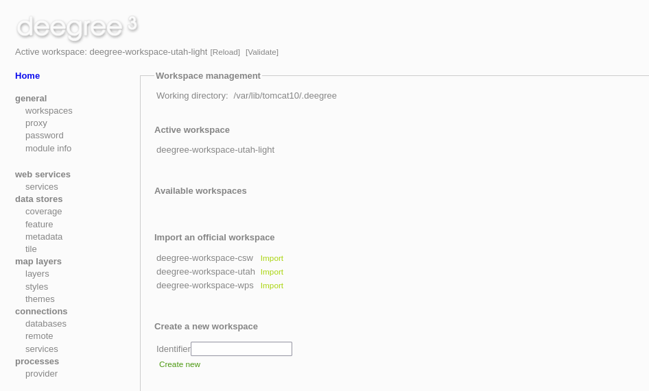

Deegree Quickstart¶
deegree is open source software for spatial data infrastructures and the geospatial web. deegree is a Java application for serving maps (and vector data) for other clients to visualize.
Verfügbare Komponenten sind:
Web services: WFS, WMS, WMTS, CSW, WPS
deegree 3.6.0-pre2 is the newest pre-release version of the deegree Java framework for GIS applications and OGC-service implementations. It can be used to build web-based geospatial-data-infrastructures (GDI).
Contents
Start deegree webservices¶
Choose . The application will take a few moments to start up.
Firefox opens the deegree webservices administration console. Alternatively, you can also open this manually by pointing your browser to http://localhost:8080/deegree. The administration console is a simple web-based GUI for editing the configuration files of the activated deegree workspace.
Laden eines Arbeitsbereichs¶
deegree uses configurations conformant to all deegree based webservices. Those configurations are stored in the workspace.
To manage the included and ready-to-use workspaces, click ‚workspaces‘ on the left side. You are now in the workspace management of the running deegree instance. You can see which workspace is currently active (only one can be active at a time) workspace, inactive locally available workspaces and official workspaces which can be imported if you have a internet connection.
Press start on the deegree-workspace-utah-light workspace.
The demo workspace contains a web mapping setup based on data from the state of Utah. It contains a WMS configuration (1.3.0 and 1.1.1) consisting of vector layers and a variety of render styles. Additionally, a WFS (2.0.0, 1.1.0 and 1.0.0) is configured that allows to access the raw vector data, backed by shapefiles, in GML format.

{kind=link}
Tip: For additional configuration examples including raster data, you can import the workspace deegree-workspace-utah through the workspace management (internet connection is required).
Visualize the data¶
Click on ‚web services‘ to display all the preconfigured web services (WFS and WMS).
Click on the ‚Capabilities‘ button of the preconfigured WMS. The GetCapabilities document of the WMS will open in a new tab.
Use the GetCapabilities request URL to add the WMS to for example QGIS. Once added, you can choose of a variety of layers served by the deegree WMS here.
{kind=link}
{kind=link}
{kind=link}
Was kommt als Nächstes?¶
This was a brief introduction to deegree’s core features. Further information and comprehensive documentation of all functionalities are available on the deegree website.
deegree-Webseite http://www.deegree.org
deegree documentation - Available here: https://www.deegree.org/documentation
deegree workshop (INSPIRE) - Available here: https://github.com/lat-lon/deegree-workshop
deegree Soildata Assimilation Guidance https://ejpsoil.github.io/soildata-assimilation-guidance/cookbook/deegree.html
- deegree docker images - Available here:
deegree webservices - https://hub.docker.com/r/deegree/deegree3-docker
deegree OGC API - https://hub.docker.com/r/deegree/deegree-ogcapi